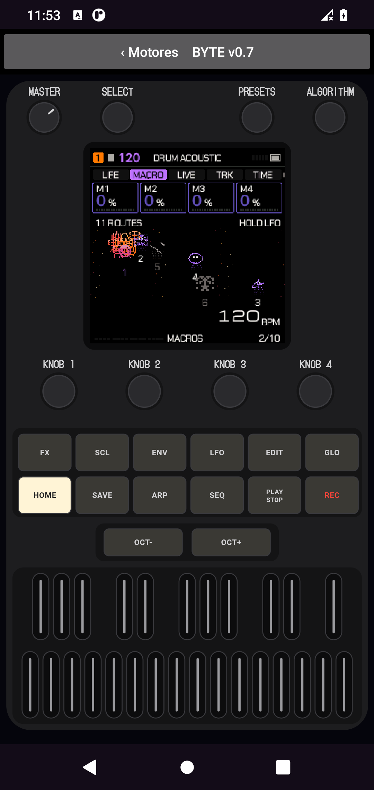
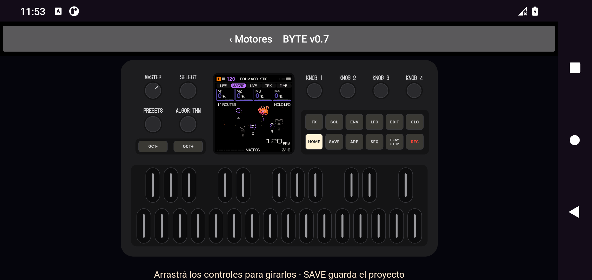

JIANT FM + JIANT /B1T3
Dos motores.
Sin conexión.
Una app Android para probar ambos firmwares, con controles táctiles en vertical y horizontal. Incluye los motores desde la primera instalación.
Descargar APK · 0.2 betaAndroid 10 o superior · APK universal de desarrollo · Android System WebView actualizado. No flashea el instrumento.
Actualizar desde 0.1 beta
Instalá este APK sobre la app existente, sin desinstalarla: conserva los proyectos. Corrige el rechazo de BYTE causado por el tamaño comprimido de la descarga. Luego tocá Buscar actualizaciones y abrí cada perfil BYTE para aplicar v0.7. La verificación SHA-256 sigue activa.
Instalación en tu Samsung
- Descargá el APK y abrilo desde Descargas.
- Si Android lo solicita, autorizá instalar esta app desde Chrome o Mis archivos.
- Abrí JIANT Offline y elegí FM o /B1T3, canal Publicado o Beta.
- Arrastrá los encoders y tocá las teclas. Podés usar varios controles a la vez y girar el teléfono.
Usá SAVE antes de salir. Cada motor y canal tiene sus propios proyectos guardados. Al salir de la app se detiene el audio; la edición que aún no se guardó no es un checkpoint.
Versiones que se quedan en el teléfono
Con conexión, la app busca actualizaciones al abrirse y periódicamente mientras está abierta. También podés tocar Buscar actualizaciones. Descarga el motor verificado y lo aplica la próxima vez que abrís ese perfil, sin cortar el audio. Si no hay red, usa el que ya tenés.
Incluye FM publicado V10.7.46, FM beta V10.7.47 y BYTE v0.7. Muestra versión y commit. Guarda la versión anterior para volver atrás si una actualización falla.
Se actualizan emuladores WebAssembly publicados y compatibles. Un commit nuevo o una beta .fwsc necesita primero su compilación de emulador; la app no compila repositorios ni ejecuta archivos del instalador de hardware. Si FM tiene una beta sin emulador publicado, lo avisa.
La interfaz y las descargas son Android; el motor corre localmente en WebView/WebAssembly. La app completa se actualiza instalando un APK nuevo; los motores pueden actualizarse por separado.
Vertical y horizontal


Panel local probado en ambos formatos. Las capturas de Android y los resultados exactos están en el informe del build.
Build y código
Cargando metadatos locales…
Validado en emulador Android: arranque offline, motores incluidos, audio y rotación. Falta la prueba física de latencia y rendimiento en el S23 Ultra.
Firmado con clave pública de desarrollo para pruebas. Conservá la app instalada al actualizar; desinstalar borra sus datos.
Código, compilación y documentación · Versiones de motores · Emulador web
GPL-3.0 · Juan Jiant · Leo Kuroshita / Hügelton Instruments · Charles Vestal. DotGothic16: SIL OFL.